Kroppson - The Gender Tool is a pedagogical design tool developed to support teaching for students in grades 4-6. Inspired by paper dolls, Kroppson visualizes biological, psychological, and social aspects of gender through movable layers and interchangeable parts. With sewn-in magnets, the material can be used on classroom whiteboards, encouraging playful and collaborative exploration of gender and human diversity, beyond narrow categories.
Gender is a complex concept where our collective understanding of the word goes on to shape and affect legislations, healthcare, and social relations. In a time when gender is heavily debated, and gender non-conforming people risk exclusion, misunderstandings and even violence, this tool aims to create a more inclusive foundation of knowledge grounded in the Swedish national curriculum, lived experiences and research.
Show Process & Sketches
Materialised thinking: Using sketching, physical prototyping, and quick iterations not just to communicate my ideas, but as a core method to explore, test, and refine complex concepts.
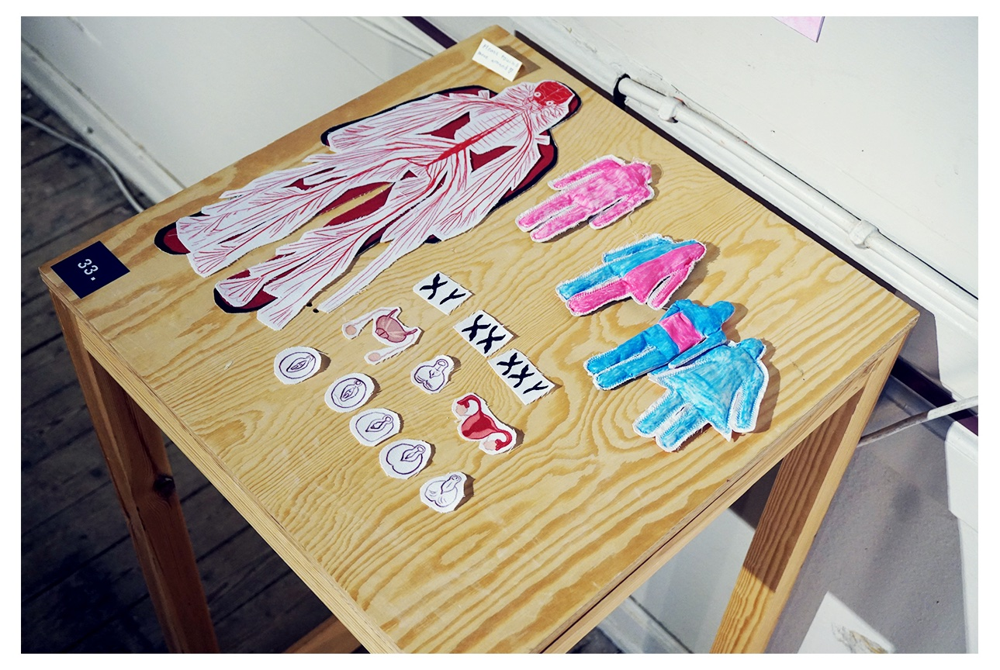
Testing materials, function and scale.
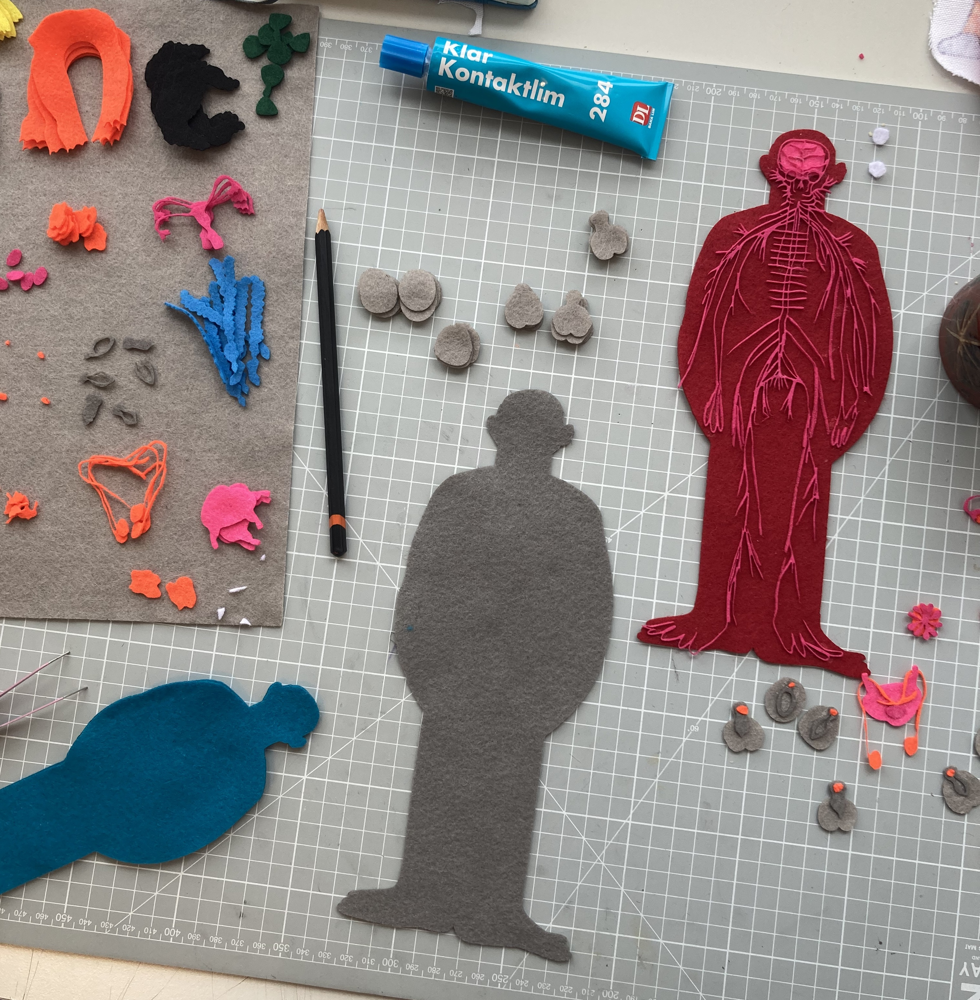
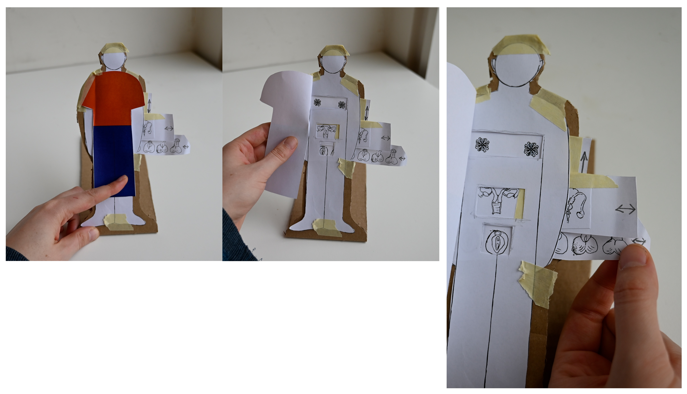
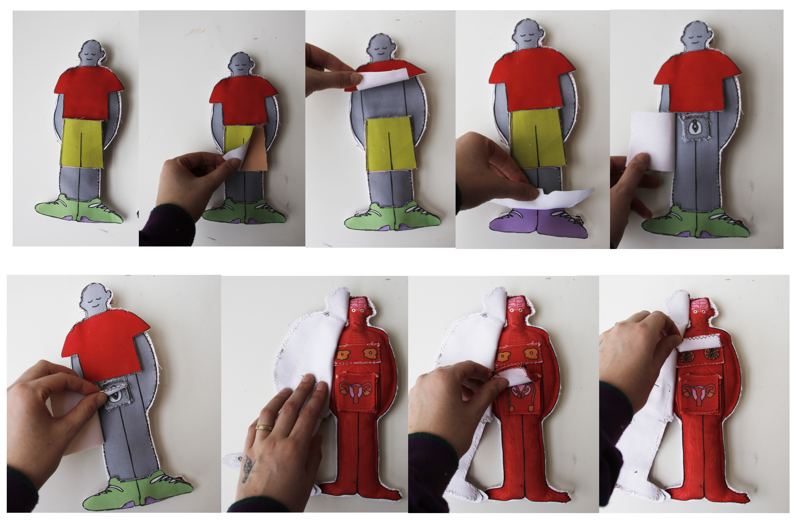
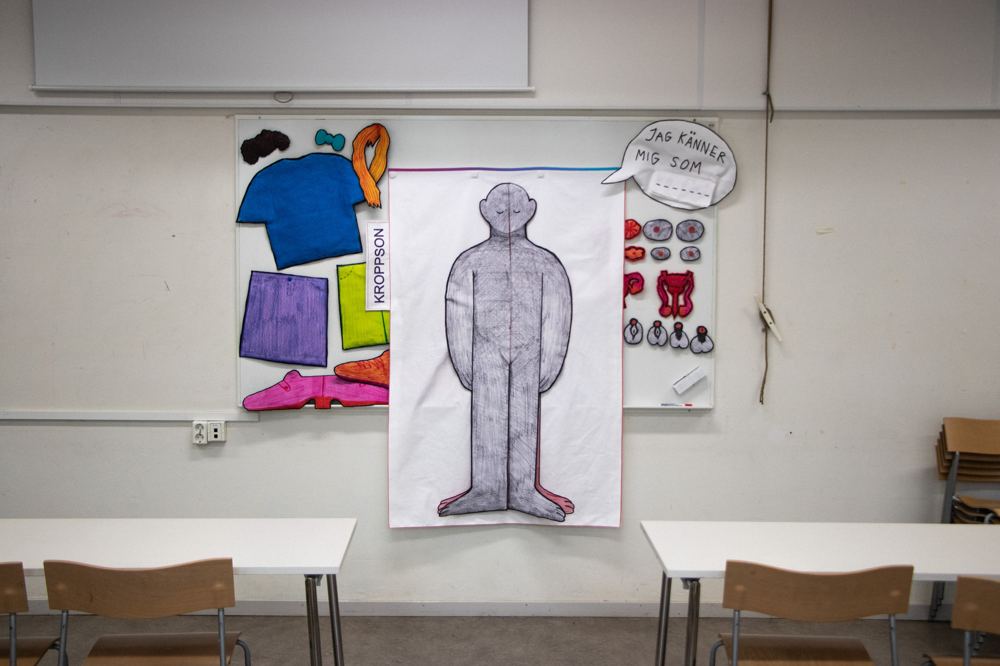
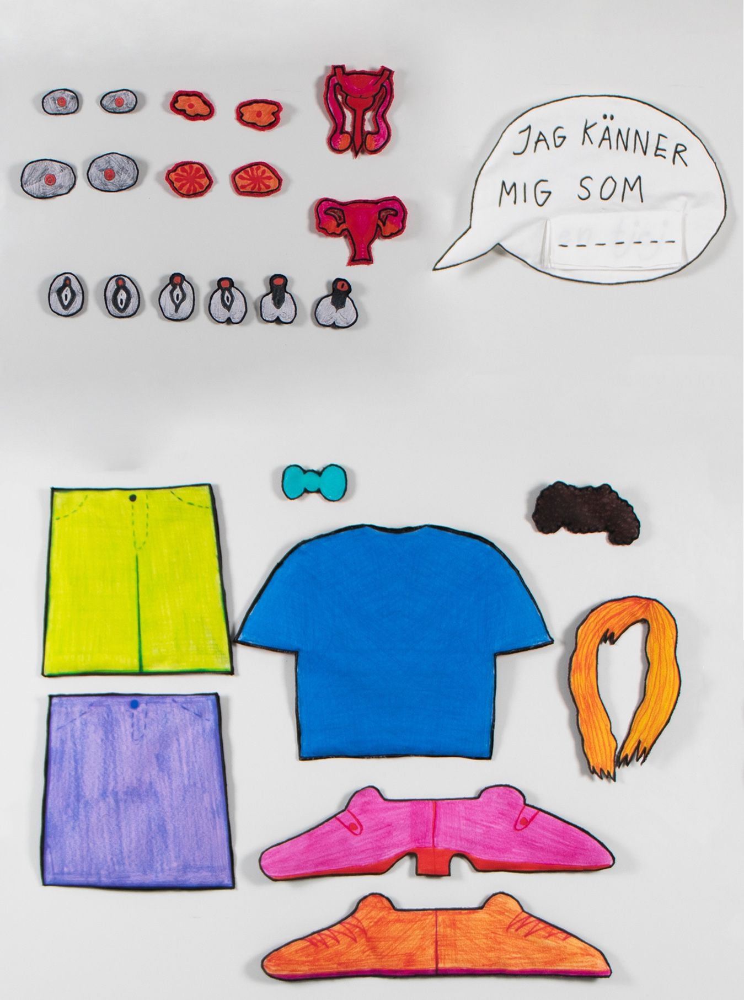
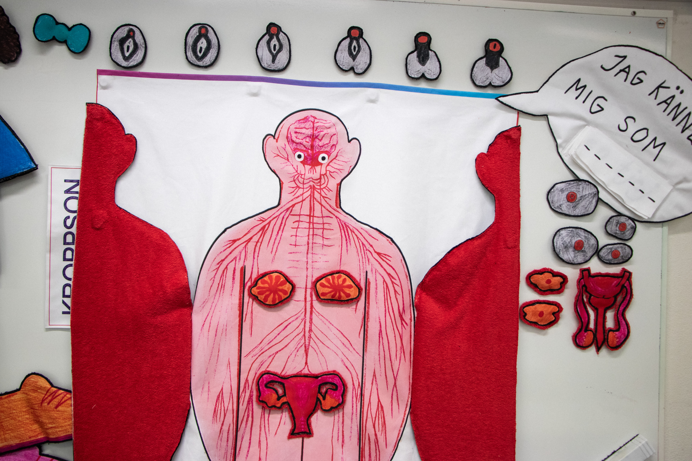
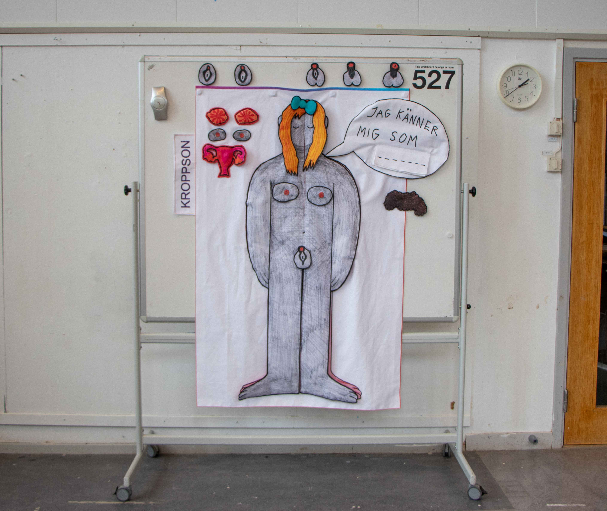
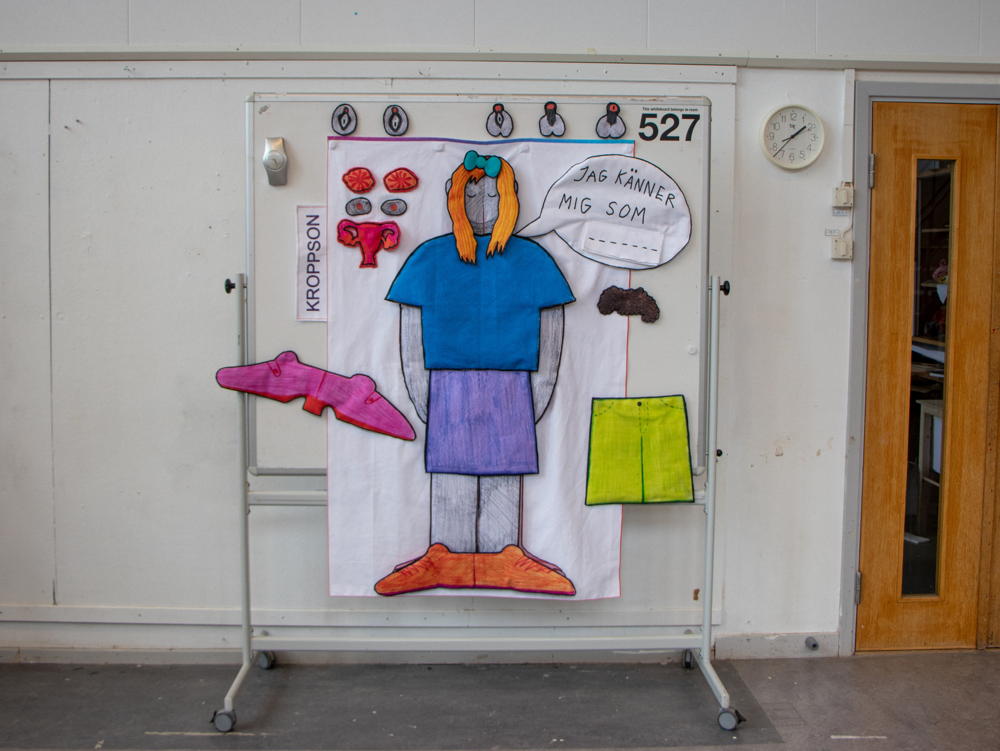
Imagine a changing room - A forced solution
Conversation piece / 2025
"We cannot create what we cannot imagine" - poet Lucille Clifton. So imagine a world where non-binary people exist. Where non-binary people are included in society. This piece is a critique against the exlusion of gender diverse people in public spaces. In hope to start a conversation about where people are allowed or not, this work showcases the lack of space by creating one. The transportable changing room for non-binary people is as heavy to carry around as the burden of being exluded in society.
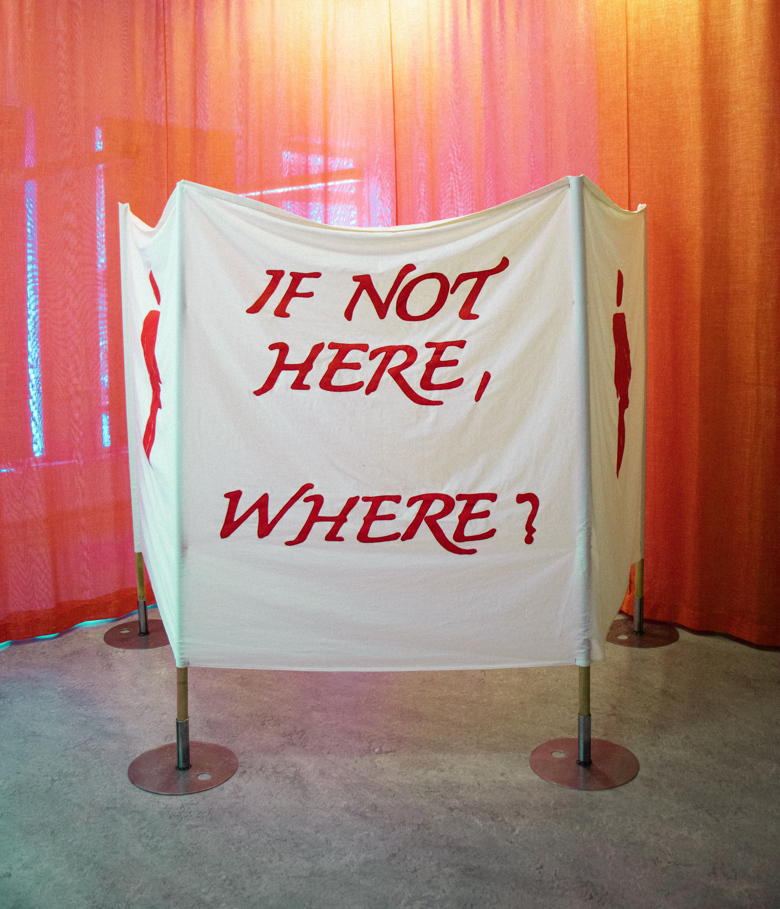
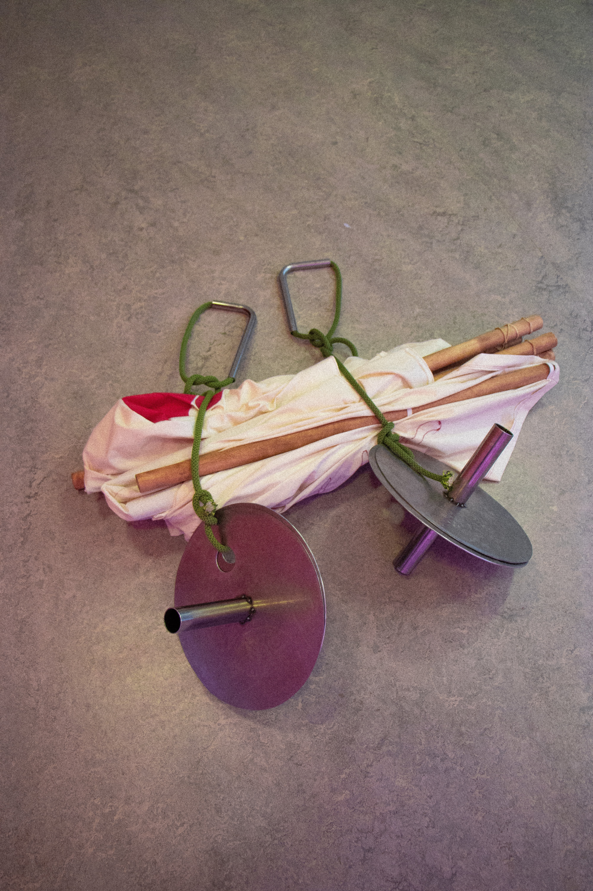
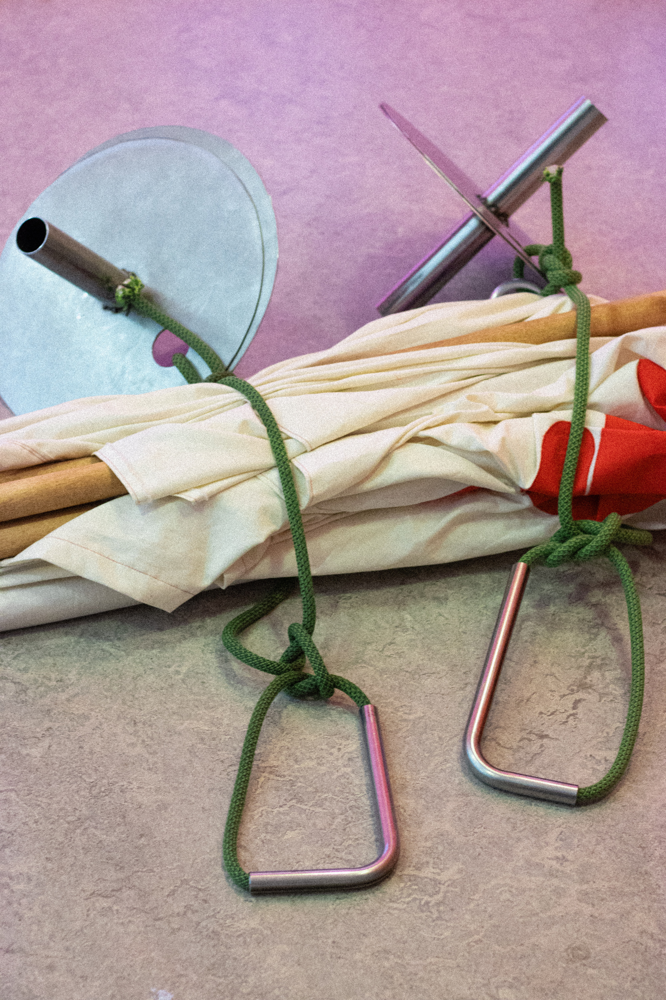
Titel Projekt 3
Underrubrik / År
Här är brödtexten för Projekt 3.
Titel Projekt 4
Underrubrik / År
Här är brödtexten för Projekt 4.